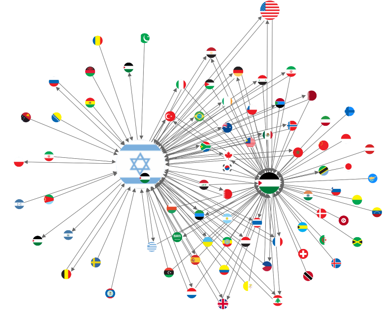

Country Connection Graph: Social Network Analysis (SNA) of International Relations

The Country Connection Graph provides a Social Network Analysis (SNA) of international relations by mapping subject countries to object countries. It allows users to see the interactions, alliances, and tensions between countries based on news events.
Key Features
- Source & Target: Visualize the country relations, with the subject country as the source and the object country as the target.
- International Relations: See which countries have frequent collaborations or tensions in news events.
- Network Dynamics: Identify key players in international relations, as well as countries with the most interactions.
Use Cases
- Diplomatic Relations Analysis: Understand the frequency of interactions between specific countries, including conflicts, agreements, or diplomatic collaborations.
- Conflict Monitoring: Identify which countries are most involved in international conflicts by mapping them as source and target countries in the graph.
Example
If you're analyzing the trade relations between the U.S. and its allies, the Country Connection Graph allows you to visualize all trade-related events where the U.S. is the subject, and other countries are the objects. This helps to highlight key partnerships or emerging tensions.